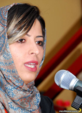

پذيرش > تریبون > مقالات > از آیینه بپرس نام نجات دهنده ات را


 از آیینه بپرس نام نجات دهنده ات را از آیینه بپرس نام نجات دهنده ات را
21 اسفند 1385 - سارا لقمانی - نسخه قابل چاپ
پول سفرها را که از جیب می گذاریم، کتابچه ها را با همان پنج تومان پنج تومان حق عضویت ها چاپ می کنیم. کسی که بابت نوشتن در سایت پول طلب نمی کند. کارگاه ها را در خانه های زنان شهر برگزار می کنیم. اگر ناراحت نمی شوید پول هایی هم بابت نذر و دعای خیر از زنان ناامید از خود و چشم امید دوخته به ما، به دستمان می رسد.
15 میلیون یورو* به چه کارمان می آید؟
کارگاه هایمان به ویدئو پروژکتور نیازی ندارد. نوشته ها را حتی تایپ و پرینت نگرفتیم با ماژیک روی کاغذ نوشته ایم. برای آنکه چشمها را شاید بنوازد چند رنگ ماژیک خریدیم. پول آن را که داشتیم. شبانه به شهرستان ها می رویم تا جای خوابمان صندلی های اتوبوس باشد. به مقصد که می رسیم مهمان خانه های زنان جوان و پرشور شهر می شویم. با دست پخت های خانگی مارا میهمان غذاهای محلی می کنند. کرایه تاکسی ها را هم از جیب حساب می کنند. هربار خجالت زده می شویم ولی مهمان نوازند دیگر.
کمپین یک میلیون امضا پول زیادی نمی خواهد. صبوری می خواهد تحمل می خواهد.
کارگاه ها را در خانه های شهر برگزار می کنیم. هر هفته به خانه یک زن می رویم. مبل ها را جابجا می کنیم تا وقتی داوطلبان می نشینند همدیگر را راحت ببینند و دیوار را. دیواری که کاغذ نوشته ها را به آن می چسبانیم. کاغذ هایی که چسب های هر بار به دیوار چسبیدن را در خود حفظ کرده است. می توانم چسب کاغدها را بشمرم و بگویم چند بار کارگاه گذاشتیم. به خانه چند زن رفته ایم. با چند زن و مرد راجع به قوانین حرف زدیم. اشک چند زن را در کارگاه ها دیده ام که سرازیر شد و نگاه لرزانش گفت که این قانون این بی قانونی شامل حال او هم شده است.
هر بار که خوردگی کاغذها را می بینم می گویم دفعه بعد آن را تایپ کنیم و پرینت بگیریم.وقتی بچه های شهرهای دیگر به تهران آمدند روی میز ناهار فقط ماکارونی با سویا دیدند و کشک بادمجان بدون گردو. ترشی را هم یکی از همان زنانی که خانه اش را برای کارگاه به ما داده بود، درست کرده بود. اکرم خانم را می گویم. یاد مامانم افتاده بودم که می گفت کشک بادمجان یعنی یک غذای مجانی. این که دیگر 15 میلیون یورو نمی خواهد. می خواهد؟
کمپین دل دردمند می خواهد.
کمپین حمایت پیرزن داغدیده 80 ساله را می خواهد که می گوید حالا که من دارم می میرم، آمده اید؟ آن زمان که مرا به اجبار به عقد همسرم درآوردند کجا بودید؟ هربار که همسرم مرا زیر مشت و لگد می گرفت زمزمه می کردم کسی به فکر گلها نیست. کسی به فکر ماهی ها نیست. کسی نمی خواهد باور کند که باغچه دارد می میرد. حیاط خانه ما تنهاست
.
پیرزن 60 ساله ای با دو دختر و دو پسرش به دفتر کارم آمدند تا بگویند چه کنند که پدرشان نتواند بعد از 45 سال زندگی مشترک، مادر را از خانه بیرون کند؟ می گفتند" زن دوم گرفته. او را به خانه مادرمان آورده. خانه ای که 45 سال برای آن زحمت کشیده. بچه هایش را در آن پرورش داده. برای شوهرش همسری کرده مادری کرده کلفتی کرده. همه مهریه اش به پول امروز می شود 4 میلیون، گذاشته کف دستش می گوید فردا برویم برای طلاق". دختر ها و پسرها حرف می زنند و پبرزن نگاه می کند . چگونه نگاهش کنم؟ به چه رویی؟ او مادر من است. مادر شماست. او همه هویتش خانه اش است و بچه هایش. همه او را به اسم زن حاجاقا می شناسند و حالا حاجاقا می خواهد او را از خانه بیرون کند. چشمانش عین التماس است. چادر از سرش می لغزد. جای کبودی گوشه صورتش پیداست. فکر می کند اگر دیگر آبرویی ندارد که حرف بزند باید با تمام قدرت به من نگاه کند. می خواهد با سوی نگاهش بگوید، داد بزند، فریاد بزند که به عروس و داماد و نوه هایش چه بگوید؟ کجا باید برود؟ که آن زن جوان کیست که اکنون در خانه اش است. مادر حقش را می خواهد. حق زندگی اش را. حق سوختنش را. سرویس های اطلاعاتی هلند می توانند به او کمک کنند؟ بگویید بیایند. 15 میلیون یورو آبروی از دست رفته را به او باز می گرداند؟ بگیرید برایش.
ما هر چه را که باید از دست داده باشیم از دست داده ایم. ما بی چراغ به راه افتاده ایم... چقدر باید پرداخت؟
دو سال پیش وقتی پدر بزرگم فوت کرد فکر می کردم از خانه کوچک او در نظام آباد چقدر به مادربزرگم می رسد وقتی 5 پسر و 2 دختر دارد. یک هشتم فقط از ساختمان نه از زمین با حساب کتاب من شد 7 -8 میلیون. چه باید می کرد با آن پول ؟ بعد از 50 سال عمری که در آن خانه برای شوهر و 7 فرزندش گذاشته بود؟ که پدرم گفت آن خانه کلنگی است . ساختمانش قیمتی ندارد. هر چه باشد پول زمین است و من هیچ گریه نکرم وقتی قبل از چهلم پدر بزرگ، مادر بزرگ مرد. گریه نکردم وقتی که اعتماد من از ریسمان سست عدالت آویزان بود و در تمام شهر قلب چراغ های مرا تکه تکه می کردند. وقتی که چشم های کودکانه عشق مرا با دستمال تیره قانون می بستند.
کاش می شد از میان چپ های افراطی و راست های بنیادگرا بیرون می آمدیم تا صدای به هم خوردنشان گوش عالم را کر می کرد. این طرف می گوید چهارچوب این نظام را قبول دارید و مشکلتان نابرابری دیه و ارث است. آن طرف می گوید وااسلاما . این طرف می گوید فکر می کنید حکومت دلش به حال یک میلیون امضا می سوزد و به خواست شما ترتیب اثر می دهد؟ آن طرف می گوید سرویس های اطلاعاتی غرب قوانین ایران را تبعیض آمیز علیه ایران قلمداد کرده است. این طرف می گوید شما فکر می کنید می توانید از کافی شاپ انقلاب کنید؟ آن طرف می گوید این ها می خواهند براندازی نرم کنند. و من فکر می کنم در سرزمین قدکوتاهان که معیارهای سنجش همواره بر مدار صفر سفر کرده اند چرا توقف کنیم؟ چرا؟
یک لحظه از فکر آمریکا و هلند و انرژی هسته ای و حق مسلم مردم ایران بیرون بیایید می خواهم سخنی به شما بگویم. پیشنهاد می کنم برای آنکه حرفم را دیگران نشنوند و به گوش سرویس های اطلاعاتی غرب نرسد مرزها را ببندید. دیوار ها را بلند تر کنید تا فقط خودتان بشنوید. مشارکتی ها، مجلسی ها، هنرمندان، ورزشکاران، کیهانی ها، استادان دانشگاه، ملی مذهبی ها، چپ ها، راست ها، موافقان حکومت، مخالفان حکومت همه تان جمع شویدتا به شما بگویم قانون لزوم تمکین جنسی زن از شوهر چه بلایی بر سر خواهران و دختران شما در پستو های خانه هایشان می آورد. می خواهم به شما بگویم می دانید وقتی دخترتان نه ماهه باردار بود دامادتان دامادتان به اجبار با او همبسترشد و او را راهی بیمارستان کرد او نتوانست به شما بگوید و نتوانست به دادگاه بگوید چون باید تمکین می کرد.
ای دوست، ای برادر، ای همخون وقتی به ماه رسیدی تاریخ قتل عام گلها را بنویس.
شب سرد زمستان است و با جلوه کنار بخاری نشسته ایم و چای می خوریم. یکی از زنان داوطلب زنگ می زند می گوید فردا ختم انعام دارد و می خواهد در خصوص قوانین تبعیض آمیز و کمپین و امضا با زنان فامیل و همسایه حرف بزند و به کتابچه احتیاج دارد. استکان را زمین می گذاریم و می رویم شهرک آپادانا. در ماشین نشسته ام و جلوه را نگاه می کنم که که در مقابل در آپارتمان با زنی که نمی شناسمش حرف می زند، می خندد، کتابچه می دهد. منتظرم چند برگ امضا شده بدهد به جلوه ولی دست خالی بازمی گردد. نگاه پرسان مرا می بیند شانه هایش را بالا می اندازد و می گوید:" گفت امضاهایی را که گرفتم دوست دارم دلم نمی آید از خانه ام بیرون کنم". خانه دار است و مادر سه فرزند. دیروز در صف سبزی فروشی از 5 زن امضا گرفته بود و همسرش در محل کار 30 امضا از همکاران مرد خود جمع کرده بود. کاش می شد با نهایت سرعت بروم به سمت افق.
یک پنجره برای من کافیست یک پنجره به لحظه آگاهی و نگاه و سکوت
15 میلیون یورو پیشکش شما.
خواست جمع آوری یک میلیون امضا خواست زنان و مردان آزاد اندیش همین سرزمین است. برگه های بیانیه را زنان و مردان همین دیار امضا می کنند. چرا که باور داریم اگر آنان نخواهند هیچ چیز نمی تواند تغییر کند. سرمایه های کمپین دختران و پسران جوان و پرانگیزه ایران هستند که می خواهند دنیای اطرافشان را خودشان آباد کنند. چند صد میلیون دلار و یورو و دینار و ریال نمی تواند درد آنان را آرام کند.. سرمایه کمپین پول نیست انسانهای آزاده ایران است که به یکدیگر امید دارند و به فردا.
فردایی که زود می آید چون
کسی می آید
کسی می آید
کسی که در دلش با ماست
درنفسش با ماست در صدایش با ماست
کسی که آمدنش را نمی شود گرفت و دستبند زد و به زندان انداخت
..... و سفره را می اندازند
..... و سهم ما را هم می دهد. من خواب دیده ام
*اشعار از فروغ فرخ زاد است
*اشاره به نوشته کیهان درمورد کمپین یک میلیون امضا
ارسال به
بالاترین
،
توییتر
،
فریندفید
،
فیسبوک
در همين بخش :
 دهمین دورۀ مراسم تندیس صدیقه دولت آبادی ۱۳۹۲ دهمین دورۀ مراسم تندیس صدیقه دولت آبادی ۱۳۹۲
کارت پستالهایی به بهانهی هشت مارس و به یاد همهی مبارزین راه برابری
بیانیه بیش از 350 تن از مدافعان حقوق زنان به مناسبت روز جهانی زن؛ زنان هر روز فرودستتر میشوند
لباسی که برای تن ما دوخته اند! /اعظم بهرامی
چالشها و چشمانداز فعالیت مدنی زنان
ديگر بخش ها :
طرح یک میلیون امضا
|
مقالات
|
سایت نوشته ها
|
اخبار
|
گزارش كمپين
|
گفت و گو
|
علیه سکوت
|
كوچه به كوچه
|
نامه های شما
|
گزارش ویژه
|
گفتگو با اعضا
|
ویژه سالگرد کمپین
|
تصویر برابری
|
دل آرام علی
|
تریبون
|
مقالات
|
تاریخ شفاهی
|
خارج از چارچوب
|
کتابخانه
|
درباره کمپین
|
کمپین در شهرها
|
کمپین در بند
|
صدای تغییر
|
ویژه 22 خرداد
|
لایحه حمایت از خانواده
|
گالری
|
عشا مومنی
|
امیر یعقوبعلی
|
خدیجه مقدم
|
راحله عسگری زاده و نسیم خسروی
|
پروین اردلان،جلوه جواهری، مریم حسین خواه، ناهید کشاورز
|
زینب پیغمبرزاده
|
سعیده امین، سارا ایمانیان، محبوبه حسین زاده، ناهید کشاورز و همایون نامی
|
احترام شادفر
|
نسیم سرابندی زاده،فاطمه دهدشتی
|
وبلاگ مهمان
|
پرونده خرم آباد
|
دستگیری ها
|
مریم مالک
|
پرستو اللهیاری
|
مهرنوش اعتمادی
|
سمیه رشیدی
|
Other Languages
|
همراهان
|
«فراخوان کمپین ده روز با بهاره هدایت»
| English
|